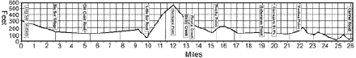

A few random recent photos.
Solved all of Project Euler.

Our proof of twenty was just published in SIAM Journal on Discrete Mathematics (Volume 27, Issue 2).
We just proved that all positions of Rubik's cube can be solved in 20 or fewer face turns.
The number of Rubik's cube positions at a distance of exactly 15 in the half turn metric is 91,365,146,187,124,313. This was determined in a collaboration between Morley Davidson, John Dethridge, Herbert Kociemba, and me.
I just got my ham license (Amateur Extra) and a vanity call (W6TGR). Hope to see you on the air, after I get the antenna stuff figured out.
I ran the Big Sur Marathon again this year (April 26th). My time was slow (4:10) but I ran sick so I'm not too disappointed.

I've been programming the propeller microcontroller. I have fat16 secure digital card support working, and I have been building a robot based on the propeller. I'm also trying to build a retro-style microcomputer based on the chip.
I've been spending some time developing Golly, a new Life program.
See the results of my cube programming contest!
I have some new results on Paterson's Worms.
Want to see the various names your machine can be accessed by?
I like to swing dance when I can; you can't beat Rob and Diane for classes and fun!
I just released a version of Hash Life and a companion display program called hlife.
I did some investigations on a new and interesting Life Form.
I have been competing on TopCoder.
You might be interested in the Radical Eye Website.
I'm a founder of Instantis, a startup in Sunnyvale.
The official dvips web page still needs some updating.
I recently wrote a ray tracer as part of a programming contest.
I am co-inventor on seven patents.
Can you solve one of my favorite puzzles?
Some places I go to frequently: